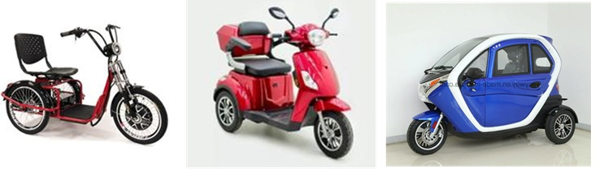
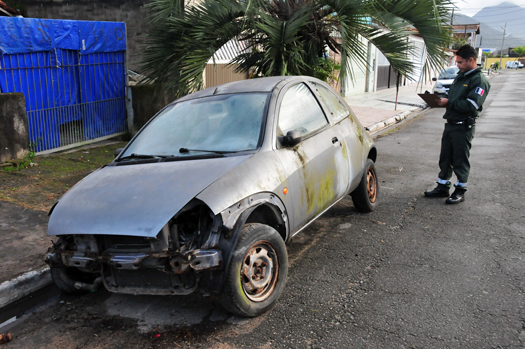

2 CONCEITOS E DEFINIÇÕES
2.1 Disposições Preliminares
Art. 1º - O trânsito de qualquer natureza nas vias terrestres do território nacional, abertas à circulação, rege-se por este Código.
Este Código não é destinado a tutelar o tráfego e transporte marítimo ou aéreo.
§ 1º - Considera-se trânsito a utilização das vias por pessoas, veículos e animais, isolados ou em grupos, conduzidos ou não, para fins de circulação, parada, estacionamento e operação de carga ou descarga.
TRÂNSITO: movimentação e imobilização de veículos, pessoas e animais nas vias terrestres.” – Anexo I, do CTB;
VIA: superfície por onde transitam veículos, pessoas eanimais, compreendendo a pista, a calçada, o acostamento, ilha e canteiro central;
PESSOAS: todos, em algum momento, estamos envolvidos no trânsito, seja como pedestre, ciclista, condutor, proprietário, transportador, embarcador, etc;
VEÍCULOS: Quanto aos veículos, o rol taxativo está previsto no art. 96 do CTB;
ANIMAIS: Quanto à circulação de animais, a previsão está no art. 53 do Código (normas gerais de circulação e conduta);
PARADA: imobilização do veículo com a finalidade epelo tempo estritamente necessário para efetuar embarque ou desembarque de passageiros;
ESTACIONAMENTO: imobilização de veículos por tempo superior ao necessário para embarque oudesembarque de passageiros”.
OPERAÇÃO DE CARGA E DESCARGA: imobilizaçãodo veículo, pelo tempo estritamente necessário aocarregamento ou descarregamento de animais oucarga, na forma disciplinada pelo órgão ou entidadeexecutivo de trânsito competente com circunscriçãosobre a via;
A operação de carga ou descarga será regulamentadapelo órgão ou entidade com circunscrição sobre a via eé considerada estacionamento. (cf. art. 47, p.ú., doCTB).
§ 2º - O trânsito, em condições seguras, é umdireito detodos e dever dos órgãos e entidades componentes doSistema Nacional de Trânsito, a estes cabendo, noâmbito das respectivas competências, adotar asmedidas destinadas a assegurar esse direito.
2.2 Definições Importantes
2.2.1 Autoridade de Trânsito
Dirigente máximo de órgão ou entidade executivo integrante do Sistema Nacional de Trânsito ou pessoa por ele expressamente credenciada.
| Diretora Geral do DETRAN-PA |
|---|
2.2.2 Agente de Trânsito
Servidor civil EFETIVO de carreira do órgão ou entidade executivos de trânsito ou rodoviário, com as atribuições de educação, operação e fiscalização de trânsito e de transporte no exercício regular do poder de polícia de trânsito para promover a segurança viária nos termos da Constituição Federal (Lei nº 14.229, de 2021).
Condições para Exercer a Função de Agente:
“Efetivo”; “Uniformizado;”; “No exercício das funções”; “Em veículo caracterizado”.
2.2.3 Agente de Autoridade de Trânsito
Agente de trânsito e policial rodoviário federal que atuam na fiscalização, no controle e na operação de trânsito e no patrulhamento, competentes para a lavratura do auto de infração e para os procedimentos dele decorrentes, incluídos o policial militar ou os agentes referidos no art. 25-A deste Código, quando designados pela autoridade de trânsito com circunscrição sobre a via, mediante convênio, na forma prevista neste Código (Lei nº 14.229, de 2021).
2.2.4 Veículo Automotor
veículo a motor de propulsão a COMBUSTÃO, ELÉTRICA ou HÍBRIDA que circula por seus próprios meios e que serve normalmente para o transporte viário de pessoas e coisas ou para a tração viária de veículos utilizados para o transporte de pessoas e coisas, compreendidos na definição os veículos conectados a uma linha elétrica e que não circulam sobre trilhos (ônibus elétrico) [Lei nº 14.599, de 2023].
2.2.5 Veículo Especial
veículo de passageiro, de carga, de tração, de coleção ou misto que possui características diferenciadas para REALIZAÇÃO DE FUNÇÃO ESPECIAL para a qual são necessários arranjos específicos da carroceria e/ou equipamento [Lei nº 14.599, de 2023].
“Ex: Trio elétrico, Funerária, Ambulância”;
2.2.6 Caminhonete
Veículo destinado ao transporte de carga com peso bruto total de até três mil e quinhentos quilogramas.
2.2.7 Camioneta
Veículo misto destinado ao transporte de passageiros e carga no mesmo compartimento.
2.2.8 Quadriciclo
veículo automotor de 4 (QUATRO) RODAS, com ou sem cabine, com massa em ordem de marcha não superior a 450 kg (quatrocentos e cinquenta quilogramas) para o transporte de passageiros, ou não superior a 600 kg (seiscentos quilogramas) para o transporte de cargas [Lei nº 14.599, de 2023].

2.2.9 Triciclo
veículo automotor de 3 (TRÊS) RODAS, com ou sem cabine, dirigido por condutor em posição sentada ou montada, que não possui as características de CICLOMOTOR [Lei nº 14.599, de 2023].

2.2.10 Ciclofaixa
PARTE DA PISTA DE ROLAMENTO destinada à circulação exclusiva de ciclos, delimitada por sinalização específica.
2.2.11 Ciclovia
Pista própria destinada à circulação de ciclos, SEPARADA fisicamente do tráfego comum.
2.2.12 Veículo em Estado de Abandono
Veículo ESTACIONADO na via ou em estacionamento público, sem capacidade de locomoção por meios próprios e que, devido a seu estado de conservação e processo de deterioração, ofereça risco à saúde pública, à segurança pública ou ao meio ambiente, INDEPENDENTEMENTE DE ENCONTRAR-SE ESTACIONADO EM LOCAL PERMITIDO.
 |
 |
 |
2.2.13 Infração
INOBSERVÂNCIA a qualquer preceito da legislação de trânsito, às normas emanadas do Código de Trânsito, do Conselho Nacional de Trânsito e a regulamentaçãoestabelecida pelo órgão ou entidade executiva do trânsito.
2.2.13.1 Classificação da Infração
Natureza (Art. 258) |
Valor R$ (Art. 258) |
Pontuação (Art. 259) |
|---|---|---|
| Gravíssima | 293,47 | 7 |
| Grave | 195,23 | 5 |
| Média | 130,16 | 4 |
| Leve | 88,38 | 3 |
| Gravíssima (3x) | 880,41 | 7 |
| Gravíssima (5x) | 1.467,35 | 7 |
| Gravíssima (10x) | 2.934,70 | 7 |
2.2.13.2 Destaque: Infrações de Trânsito
Art. 162 Dirigir Veículo:
- I - sem HABILITAÇÃO: GRAVÍSSIMA;
- II - com HABILITAÇÃO suspensa ou cassada: GRAVÍSSIMA;
- III - HABILITAÇÃO categoria diferente: GRAVÍSSIMA;
- V - HABILITAÇÃO vencida há + de 30 dia: GRAVÍSSIMA;
Art. 163 Entregar a direção do veículo a pessoa nas mesmas condições do (art. 162, I a III e V): GRAVÍSSIMA;
Art. 164 Permitir que pessoas nas condições do art. 162 tome posse de veículo automotor e passe a conduzi-lo : GRAVÍSSIMA;
Art. 234 falsificar ou adulterar HABILITAÇÃO: GRAVÍSSIMA; Art. 238 Recusar a entregar HABILITAÇÃO: GRAVÍSSIMA; Art. 242 Fazer falsa declaração de domicílio para HABILITAÇÃO: GRAVÍSSIMA;